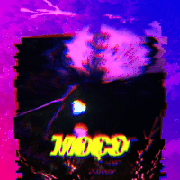

▼ art ▲
MOÇO
MOÇO was released as a single (along with a karaoke version) and it is a song for a friend who I
have been missing for too long.
Released July 4th 2021.
I send you this song to formalize that I am shattered.
I have missed you every day since the eclipse up until tomorrow.
This ghosting is unacceptable.
Listen to the song on bandcamp >>
Listen to the song on
spotify >>
Listen to the song on soundcloud >>
I also directed/produced its music video with the invaluable help of my friends Manuel Barros, Miguel
Amorim and Bernardo de César and with the support of Teatro Universitário do Porto and CASA COMUM - U.P.
The full credits list for the MV is available here on TUP's website.
Watch the MV on youtube >> / subtítulos en español >> / english subtitles >> / PT lyrics >>
☷T'AI☰
 Named after both the hexagram 11 and my chosen name: ☷T'AI☰ is an album that comes to life as my life falls
into place.
Named after both the hexagram 11 and my chosen name: ☷T'AI☰ is an album that comes to life as my life falls
into place.In celebration of my very first T-versary and the eve of the Carnation Revolution, with a pinch of self-absorption and the best wishes for a fully automated luxury gay space communism.
Released April 24th, 2021
The spotify canvas for this album use footage kindly provided by Demy and MARXelo.
Listen to the album on bandcamp >>
Listen to the album on souncloud >>
Listen to the
album on spotify >>
Listen to the album on apple music
>>
doravante (a tribute to ドラヤチ)

doravante (en: henceforth) is a tribute to beginnings.
The beginning of my adventure in music was marked by the birth of dorayachi [ドラヤチ ] in 2010. The first musical project to which I dedicated myself wholeheartedly and the first band I ever played live with.
dorayachi was inspired by the japanese cultural scene and rock artists which brought the former members together in the first place.
Now, 8 years after its end, doravante is a reflection upon, a reinterpretation and a new take on the songs from dorayachi's never released album: TOBU [飛ぶ].
It is also a tribute to friendship.
To a band whose formation has changed so much and where some of its members got to play a musical instrument for the very first time and where making music was often just a great excuse to hang out.
Released March 20th, 2021 at 9:38 (GMT).
Listen to the album on bandcamp
>>
Listen to the
album on spotify >>
Listen to the album on itunes >>
corvo rosa e o ritmo fantasma
 Back in
2014, I recorded a series of electric guitar works when I first decided I wanted to learn how to use a DAW.
Each one of these songs was started and completed in a single night (while my mother was away working) and
what remains of them today are the .mp3 files that were recorded over six years ago.
Back in
2014, I recorded a series of electric guitar works when I first decided I wanted to learn how to use a DAW.
Each one of these songs was started and completed in a single night (while my mother was away working) and
what remains of them today are the .mp3 files that were recorded over six years ago.
They are [still] dedicated to Diogo.
Released January 20, 2021
Listen to the album on
bandcamp >>
Listen to the album on
soundcloud >>
estímulo.miragem
 estímulo.miragem is a 6 track
music album. Each track lengths exactly 10 minutes, adding up to one hour of music.
Its structure resembles that of an I Ching hexagram (六十四卦) which are composed by a top and a bottom bāguà
(八卦), each made up of three lines.
It is a slow reflection on a short-timed life event aided by a strict set of rules and the Conjoining ䷞
hexagram.
Throughout the album, the tracks become increasingly more structered, rhythmic and tonal and some are split
into noisy and melodic parts.
estímulo.miragem is a 6 track
music album. Each track lengths exactly 10 minutes, adding up to one hour of music.
Its structure resembles that of an I Ching hexagram (六十四卦) which are composed by a top and a bottom bāguà
(八卦), each made up of three lines.
It is a slow reflection on a short-timed life event aided by a strict set of rules and the Conjoining ䷞
hexagram.
Throughout the album, the tracks become increasingly more structered, rhythmic and tonal and some are split
into noisy and melodic parts.Released December 21, 2018 at 22:23 (GMT).
The spotify canvas for this album were kindly made by girlflux (ギ).
Listen to the album on bandcamp >>
Listen to the album on soundcloud
>>
Listen to the
album on spotify >>
ghostwritten
 ghostwritten were a math-rock/post-pock,
Porto based trio from november 2013 to august 2018. Final lineup: Tiago Aires Lêdo (gtr.), Dany Campos
(gtr.),
Daniel Andrade (drm.). Former members: Filipe Oliveira (ba.), Afonso Aguiar (ba.).
ghostwritten were a math-rock/post-pock,
Porto based trio from november 2013 to august 2018. Final lineup: Tiago Aires Lêdo (gtr.), Dany Campos
(gtr.),
Daniel Andrade (drm.). Former members: Filipe Oliveira (ba.), Afonso Aguiar (ba.).Listen to Mother Tongue on Reverbnation >>
dorayachi
 dorayachi [ドラヤチ]
were japanese rock inspired band based in Porto from 2010 to 2013. dorayachi played in several
japanese-culture events / anime conventions. Final lineup: Sara Gomes — Arya Urubunny (vo.), Tiago Aires
Lêdo —
空のリズム (gtr.), Dany Campos — Dany (gtr.), Daniel Andrade (drm.), Filipe Oliveira — Sora (ba.). Former
members: Sara Rocha — Hachi (ba.), João — Tsume (drm.), João Lobo (drm.).
dorayachi [ドラヤチ]
were japanese rock inspired band based in Porto from 2010 to 2013. dorayachi played in several
japanese-culture events / anime conventions. Final lineup: Sara Gomes — Arya Urubunny (vo.), Tiago Aires
Lêdo —
空のリズム (gtr.), Dany Campos — Dany (gtr.), Daniel Andrade (drm.), Filipe Oliveira — Sora (ba.). Former
members: Sara Rocha — Hachi (ba.), João — Tsume (drm.), João Lobo (drm.).nanoparticular
 Nanoparticular is a digital interactive
installation developed in a 5-day hackathon (EMERGENCE@UP), aiming to raise awareness about the amazing
powers and potencial dangers of metallic nanoparticles. Team: Marta Verde Baqueiro, Marta Correia, Francisca
'Kika' Rocha Gonçalves, Tiago Aires Lêdo, António Sousa.
Nanoparticular is a digital interactive
installation developed in a 5-day hackathon (EMERGENCE@UP), aiming to raise awareness about the amazing
powers and potencial dangers of metallic nanoparticles. Team: Marta Verde Baqueiro, Marta Correia, Francisca
'Kika' Rocha Gonçalves, Tiago Aires Lêdo, António Sousa.First presented September 27th, 2019 at Casa Comum, Rectorate of the University of Porto.
a vague sense of presence
 a vague sense of presence is a symbiosis
between individual sounds and its encompassing aural field. Each of the composers followed the path they
desired, culminating in a work that reflects its particularities and likenesses. By linking all the parts,
the path converged into a single point, a center.
As a collective, the parts make up the whole. The individuality, although present and symbolized by each one
of the speakers, is diluted. In the implied volume created by the structure, a space of communion and
contemplation emerges, surrounded by sound. Each composition is generative, as well as the transitions
between themselves.
Using a probabilistic system and the intrinsic internal compatibility of the unique elements of each
composition, the complete work is composed. An installation by COLECTIVO 「大音量コンピューター」 (Gonçalo Santos, ギ
(Gui), Ivo Santos, Joana Rodrigues, Tiago Aires Lêdo, Luís Arandas, Marcelo Sousa, Paulo Teixeira, Pedro
Sarmento). A
linear version of this work is avaliable as an album on bandcamp.
a vague sense of presence is a symbiosis
between individual sounds and its encompassing aural field. Each of the composers followed the path they
desired, culminating in a work that reflects its particularities and likenesses. By linking all the parts,
the path converged into a single point, a center.
As a collective, the parts make up the whole. The individuality, although present and symbolized by each one
of the speakers, is diluted. In the implied volume created by the structure, a space of communion and
contemplation emerges, surrounded by sound. Each composition is generative, as well as the transitions
between themselves.
Using a probabilistic system and the intrinsic internal compatibility of the unique elements of each
composition, the complete work is composed. An installation by COLECTIVO 「大音量コンピューター」 (Gonçalo Santos, ギ
(Gui), Ivo Santos, Joana Rodrigues, Tiago Aires Lêdo, Luís Arandas, Marcelo Sousa, Paulo Teixeira, Pedro
Sarmento). A
linear version of this work is avaliable as an album on bandcamp. First presented October 36, 2018 at FESTIVAL SEMIBREVE in Braga. This work was partly supported by MM-FEUP.
Listen to the album on bandcamp >>
Watch the teaser on Vimeo >>
Watch the making of on Vimeo >>
On ギ (girflux)'s homepage >>
leave a message~
 Leave a Message~ is an interactive installation
that uses a Pure Data patch and a modified telephone at its core. The users pick up the telephone and
are instructed to "Please leave your message after the tone *beep*", having then a few seconds to leave
a voice message and end the transmission. The next user who picks up the phone will first listen the
voice message left by the previous user and then have the opportunity to leave their own to the next
user. In the end of the demonstration the integrity of the voice messages go through a speech-to-text
process and a word-cloud is generated featuring the words most frequently said in the voice messages.
Team: Ana Ferreira, Elaine Aguilar, José Pedro Silva, Roberto 'William' Nóbrega, Tiago Aires Lêdo.
Leave a Message~ is an interactive installation
that uses a Pure Data patch and a modified telephone at its core. The users pick up the telephone and
are instructed to "Please leave your message after the tone *beep*", having then a few seconds to leave
a voice message and end the transmission. The next user who picks up the phone will first listen the
voice message left by the previous user and then have the opportunity to leave their own to the next
user. In the end of the demonstration the integrity of the voice messages go through a speech-to-text
process and a word-cloud is generated featuring the words most frequently said in the voice messages.
Team: Ana Ferreira, Elaine Aguilar, José Pedro Silva, Roberto 'William' Nóbrega, Tiago Aires Lêdo.This project was presented January, 2018 at the Faculty of Engineering of the Univerity of Porto.
Watch the video on Vimeo >>
This patch is avaliable on GitHub >>
câmara
 Câmara is an interactive
installation. A bedroom-like space to explore and reflect on the states of awareness through the stages of
sleep. Featuring a mattress-as-a-sensor analogous to a photographic film. The sensor-bed, which is sensitive
to movement (or the lack of it) manipulates a video-projection of a window, mixing the outdoor's nightscape
with dreamlike footage, traversing the various stages of sleep.
Câmara is an interactive
installation. A bedroom-like space to explore and reflect on the states of awareness through the stages of
sleep. Featuring a mattress-as-a-sensor analogous to a photographic film. The sensor-bed, which is sensitive
to movement (or the lack of it) manipulates a video-projection of a window, mixing the outdoor's nightscape
with dreamlike footage, traversing the various stages of sleep. Team: Daniel Machado, Gonçalo Santos, Elaine Aguilar, Marcelo Valle, Miguel Soares, Tiago Aires Lêdo.
First presented in January 2018, at Carlos Amarante High School, Braga. Public display supported by BragaMediaArts.
flormiga
Flormiga is a digital technology and music project which aims to promote a sensible relationship between children and nature through sonic-plants. This project is the subjects of the Master's Dissertation Music with Plants: Cultivating Bonds Between Grade-Schoolers and Nature through Sound Design and it is being developed in collaboration and with the support of the educational service of the Orquestra Jazz de Matosinhos. The project was presented at the 21st Conference Consciousness Reframed 2019 — Sentient States: Bio-mind and Techno-nature.
Read the dissertation >>
Watch a video teaser >>
This patch is avaliable on Github >>
Listen to the sound design on Soundcloud >>
anita caça fantasmas
 Anita Caça Fantasmas is an interactive
MAX/MSP patch based on EVP (electronic voice phenomena) that invites all participants to unveil the ghosts
of a haunted room. The patch uses real-time sound analysis to trigger events, generate sound and respond to
the user in a game-like, spooky manner.
Anita Caça Fantasmas is an interactive
MAX/MSP patch based on EVP (electronic voice phenomena) that invites all participants to unveil the ghosts
of a haunted room. The patch uses real-time sound analysis to trigger events, generate sound and respond to
the user in a game-like, spooky manner.Watch a demo on Vimeo >>
This patch is avaliable on GitHub >>
toban djan
 Toban Djan is a generative sound
MAX/MSP patch, featuring an imagined suburban soundscape by the sea. A lonely bus-stop experience in the
company of a masculine and a feminine voice, who speak an impression of an east-asian language; a fly; and
an ever-present feeling of anxienty. It was conceived for spacialized environments using Ambisonics and it
was presented in both in 6-speaker and 9-speaker settings.
Toban Djan is a generative sound
MAX/MSP patch, featuring an imagined suburban soundscape by the sea. A lonely bus-stop experience in the
company of a masculine and a feminine voice, who speak an impression of an east-asian language; a fly; and
an ever-present feeling of anxienty. It was conceived for spacialized environments using Ambisonics and it
was presented in both in 6-speaker and 9-speaker settings.This patch was played as part of the installation a vague sense of presence and recorded as the track a vague sense of self-awareness.
Listen to a vague sense of self awareness on bandcamp >>
This patch is avaliable on GitHub
>>
shell search
 Shell Search is a videogame demo project by the
team The Smart Ponies. A collaboration between the Faculty of Engineering and the Faculty of Fine Arts of
the University of Porto. Sound design and implementation with Wwise: Ana Rita Torres, Joana Rodrigues and
Tiago Aires Lêdo. Programming: João Ferreira, Inês Proença, João Costa and Lázaro Costa. 3D modeling and
design:
Catarina Neves, Hugo Sá, Morries Eigi.
Shell Search is a videogame demo project by the
team The Smart Ponies. A collaboration between the Faculty of Engineering and the Faculty of Fine Arts of
the University of Porto. Sound design and implementation with Wwise: Ana Rita Torres, Joana Rodrigues and
Tiago Aires Lêdo. Programming: João Ferreira, Inês Proença, João Costa and Lázaro Costa. 3D modeling and
design:
Catarina Neves, Hugo Sá, Morries Eigi. Presented June, 2018.
impish_delay.pd
 Impish_Delay.pd
is a delay effect for electric guitar made using Pure Data and a little magick. A stereo ping pong delay
with pitch shifting control option for the repetitions. Effect values may be controled in real-time with
playing intensity and attack.
Impish_Delay.pd
is a delay effect for electric guitar made using Pure Data and a little magick. A stereo ping pong delay
with pitch shifting control option for the repetitions. Effect values may be controled in real-time with
playing intensity and attack.This patch is avaliable on GitHub >>
Watch the demo on Vimeo >>
sardões
 Sardões is playful photographic series about
seeking ocellated lizards, the liveliness of the dune and the elapsing summer.
Sardões is playful photographic series about
seeking ocellated lizards, the liveliness of the dune and the elapsing summer.Published online in September 29th, 2020
outono
 Outono is a documental short inspired by
Matsuo Basho's autumn haiku. A film by ギ (Gui Gaspar/girlflux), Pedro Sarmento and Tiago Aires Lêdo.
Challenged by
the Citadocs project.
Outono is a documental short inspired by
Matsuo Basho's autumn haiku. A film by ギ (Gui Gaspar/girlflux), Pedro Sarmento and Tiago Aires Lêdo.
Challenged by
the Citadocs project. Presented November, 2018
ana anonymous

Ana Anonymous is an animation short written and voiced by Ana Ferreira; with
storyboard, drawings, animation, music and editing by Lêdo; presented as an installation
and online with the help of Roberto 'William' Nóbrega, Elaine Aguilar and José Pedro
Silva.
First presented November, 2017 at the Faculty of Engineering of the
University of Porto.
cinematograhy/videography
Videographer of redoma - entreparedes/redoma (Live), premiered on March 1st, 2022.
Watch the video on youtube >>
Director of photograhy of the following short-films: Anexo, Dor
and Extra-Corpo, written and directed by Tiago Colaço; Click!
directed by Joana Sousa, Tiago Colaço and Tiago Aires Lêdo; Ao Salvamento! directed by
Ricardo Leite; Halo — Black Box a music video directed by Fábio Castro and Tiago
Lêdo.
production assistant
Dildotectónica(2023) a film by Tomás Paula Marques.
MONO(2020) a film by Joana Mont'Alverne, a Teatro Universitário do Porto production.
achei "achei tendência" tendência

"Achei "Achei Tendência" Tendência" is a short solo theater piece about positive feedback, echo chambers and other sonic ideas about upholding opinions. An incentive to mistrust.
It was first presented at the opening of the exhibition "Provador" by Tales Frey, at 25 Years of Maus Hábitos on April 6, 2024.
exercícios de florescimento

Exercícios de Florescimento is an artistic project that seeks to hypothesize an inclusive and sustainable future. It grows from the intersection of trans and non-binary identities, willing to build and experiment with ways of renewing the anti-capitalist struggle.
Florescimento tears through even the hardest and most stagnant material, persevering through each cycle, imagining a forest around every corner.
It took the form of two complementary exercises: first, the creation of a seed flag to be carried during the parades celebrating the Carnation Revolution until its final landing in the garden of Avenida 25 de Abril in Porto, where the seeds carried in the flag were planted; second: a performance-installation piece that took place in Armazém Pedreira on August 19, 2023.
This project was co-created by Flor, Rebeca Letras, me and Paula Tomás Marques.
The clothing desgin and production is from Tilo (Patrícia Brito); Joana Rodrigues did the sound and light operation; the design and website development is by PLANA; video by Alexandra Côrte-Real; photography by Confúcio and others; and it was made thanks to the support of Pedreira and Criatório (CMP).
Visit the project's official website >>
Visit the project's design and web development page >>
This project on Rebeca's webpage >>
o dildotauro de lide

O DILDOTAURO DE LIDE (PRÓLOGO) is the result of the Artistic Residency No
Entulho, promoted by
Artworks, for which I was selected by Pedreira,
the place where it was also exhibited as a work-in-progress/investigation in the context of a residency's
open studio.
Presented as an installation-performance, divided in three spaces (1) video show composed by the videoclip
of the song
MOÇO; video that I captured during my time in
residency; and the video-performance
with the same name of the presentation. (2) performance (3) found, made, unfinished and abandoned objects
from the residency.
In this residency I had the invaluable support of Hilda de Paulo; with the artistic production of
Francisca Marques and Lola Rodrigues,
the video registration of Bruno Lança, and the production and construction support of the whole Artworks
team (Carlos, André, Pedro, Emanuel,
Luís, Hélder, Carlos, António, among many others); with the hospitality and attention of the people from
Pedreira; with the production support
from Teatro Universitário do Porto and the
technical support from Eduardo
Brandão and with the technical-artistic work of my friends Mariana Leite Soares (technical/light
direction), Joana Rodrigues (sound design),
Tomás Paula Marques (creation and video support) and Teresa Antunes (light support).
Listen to the talk @ soundcloud
>>
The video-performance was presented in November 2023 at the art exhibition "Apontamentos sobre as masculinidades", Porto, in Atelier Galeria FFAC and from June 19th to September 6 2024, in the VideoArt exhibition from Poste_Matosinhos Qualia #5 both curated by Tales Frey.
performer
"Amanhã, Amanhã, Amanhã" co-creation/actor (the Narrator).
"Amanhã, Amanhã, Amanhã" is a play by Teatro Universitário do Porto, directed by Nuno Matos and with dramaturgy by Raquel S., based on William Shakespear's "The Tragedy of Macbeth". The play premiered on February 11, 2025 at CRL - Central Eléctrica, Porto.
Selected for RITU - Festival International de Théâtre Universitaire in Liége, Belgium (presented on March 29, 2025).
"Duas Vezes João Liberdada" actor (Manuel, peasent man) and scriptwritting support in the film by Paula Tomás Marques, premiered at the 75th annual Berlin International Film Festival in February 2025.
"The Macaroni Club" by The Cursed Assembly. Performer/roleplayer for The Macaroni Club at Clube Fenianos Portuenses during the DDD Festival on April 27, 2024.
"Trans*performatividade" by Aura da Fonseca. Performer in the show's presentations at CAMPUS PCS (Porto), Teatro da Disdascália (Famalicão), TMP - Teatro do Campo Alegre (Porto) and Temps D'Images, mono lisboa (Lisbon) in 2023.
"O QUE VEM DEPOIS DA ESPERANÇA?" by Hilda de Paulo, a Teatro Universitário do Porto production
Performer and pre-production of the show. Presented on March 31, April 1, 2, 3, 9 and 10 at Mala Voadora.
@ TUP's website >>
"The scythe is a crescent moon" by Odete
Performer activating Odete's "The scythe is a crescent moon" in the exhibition Erro
417: Expectativa Falhada at Galeria Municipal do Porto on february 8, 2021.
@ Odete's instragram >>
"MONO" by Joana Mont' Alverne
Performer and production assistant in the film MONO: an experimental movie and performance directed
by Joana Mont'Alverne and interpreted by the acting students of TUP's 2020 Introduction to Acting
Course.
Premiered December 13th, 2020 at Cinema Passos Manuel, Porto
music/sound designer
"Contacto de Emergência" by silentparty at Teatro Univertsitário do Porto. Sound design and operation for the performances of the play from July 3 to 12, 2025.
"GINECEU" by maré d'esperança, at FATAL. Music and live music performance for the presentation in Lisbon at Carlos Paredes' Hall on May 21st 2022.
"Enquanto Rega e Não Rega" by Luísa Maria and Miguel Amorim
Music producer/poster designer/video for the play "Enquanto Rega e Não Rega", debuted in Espaço Al 859, Porto on february 24, 2022.
Official website >>
"ramerrame" by Inês Pinheiro Torres and marisa catita
Musician/performer/teaser-video in the performance ramerrame, in the context
of the RISCAR cycle of performances (Teatro
Universitário do Porto and CASA COMUM — U.P.).
Premiered on July 11th 2021 at Pátio da Reitoria da Universidade do Porto.
</3
Series mutating poems on heartbreak.
Writings from January to July 2024.
a viragem (the turn)
Poem for the performance Exercícios de Florescimento, a project co-created by Flor, Rebeca Letras, me and Paula Tomás Marques (more info above in the performance section).
Presented at Armazém Pedreira on August 19, 2023.
Read here (in portuguese)>>
theia

theia is a story about destruction as a creative impulse through the tale of the great impact. My original text, reading and music for the TUP's podcast series Pó-de-TUP.
Published February 3rd, 2021 in Pó-de-TUP, CASA COMUM U.Portoestímulo, miragem
My original text and reading of Estímulo, Miragem — a portuguese version of the introductory
text of my homonymous musical work — was featured in Pó-de-TUP is a podcast by Teatro Universitário do
Porto supported by Casa
Comum from Universidade do Porto.